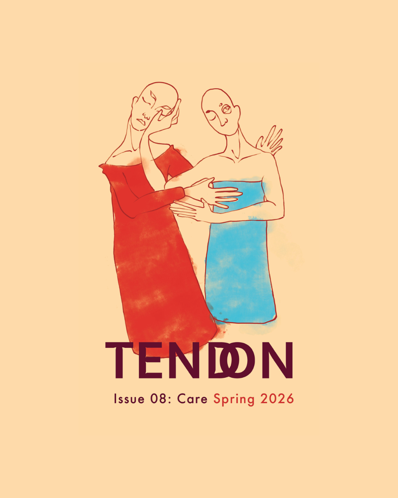
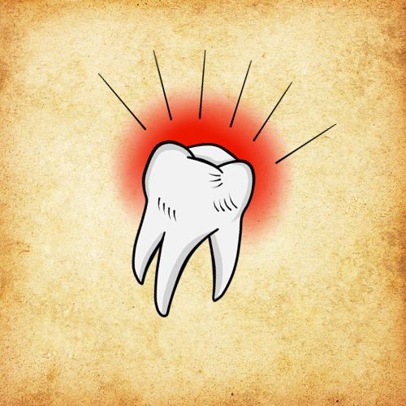
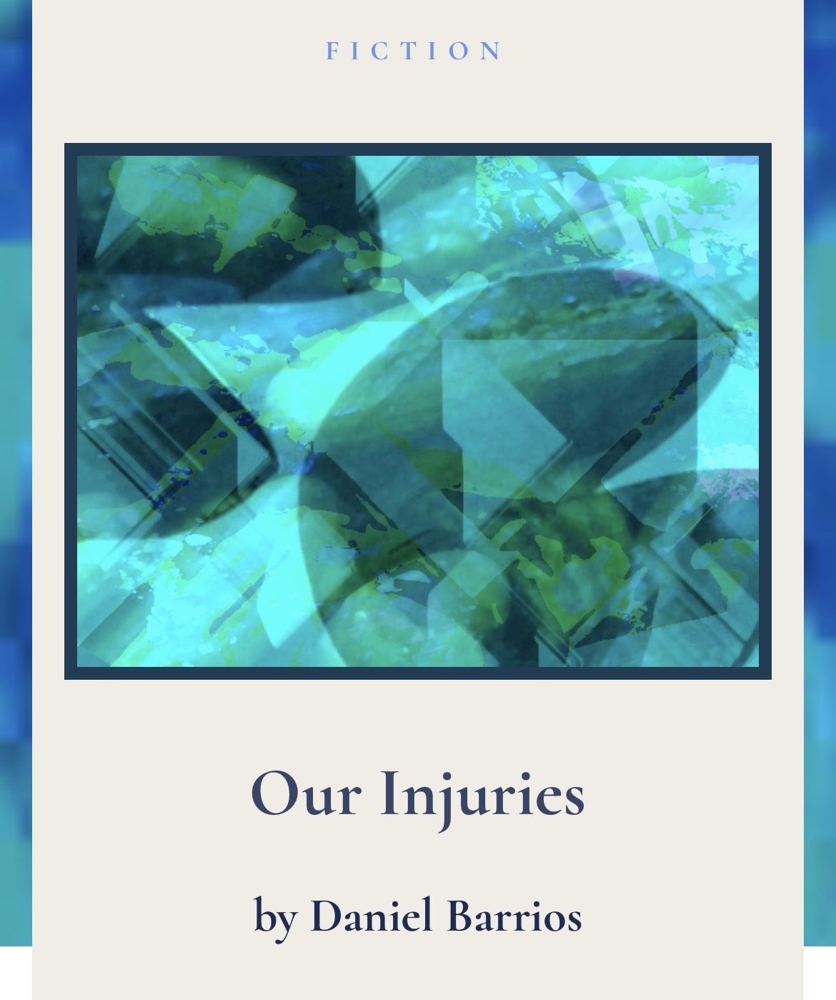
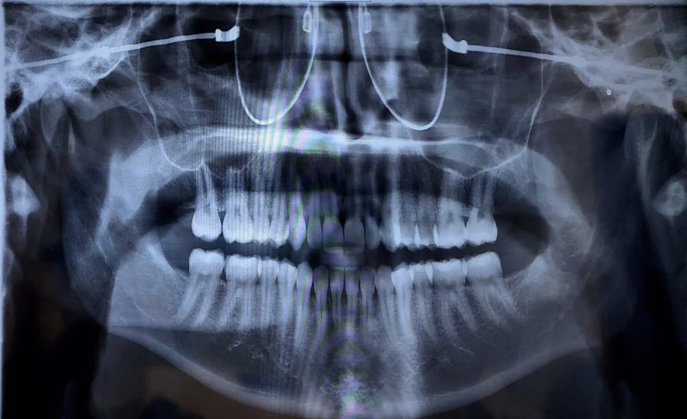
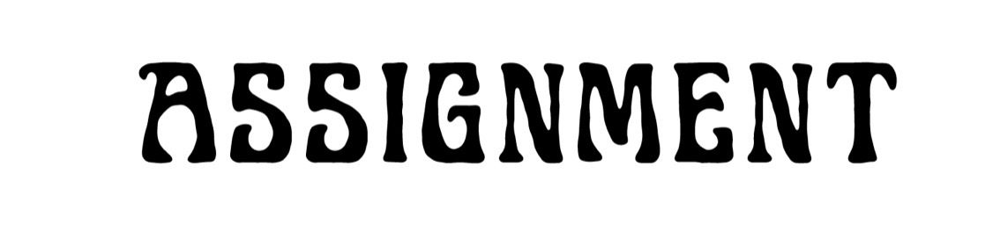

Tendon Magazine
Let Me See Your Face
Spring 2026
A recent piece exploring care, recognition, and the fragile spaces where bodies and language meet.
Writer · Educator · New York & the Caribbean

A Good Impression
Cornerstone Press · University of Wisconsin–Stevens Point · 2028
daniel barrios is interested in the small moments people survive: a haircut, a joke between brothers, a long silence at a kitchen table. He writes to understand those moments a little better.
Landing Page
Recent fiction and criticism at the center first — the work moving now.

Tendon Magazine
Spring 2026
A recent piece exploring care, recognition, and the fragile spaces where bodies and language meet.

Drift & Dribble Miscellany
2026
A fiction piece about labor, intimacy, and the small wounds people carry together.

The Brooklyn Review
2024
A story set in the world of dental labor, where work, survival, and language grind against one another.

Assignment Magazine
2025
An essay on language, permission, and the politics of voice on the page.
Flash Wall Navigation
About
daniel barrios is interested in the small moments people survive: a haircut, a joke between brothers, a long silence at a kitchen table. He writes to understand those moments a little better. Most of the time he is somewhere between New York and the Caribbean, listening to the splishes and splashes of seagulls cackling while hovering over ferries along the Hudson and mermaids swirling foreshore during shimmering overcasted beaches in Borikén.
daniel barrios (he/him/él) is a Dominican/Puerto Rican writer and educator from Staten Island, New York. His debut collection of short stories, A Good Impression, is forthcoming from the University of Wisconsin–Stevens Point, Cornerstone Press (2028). His collection was a finalist for the 2025 EastOver Prize for Debut Short Story Collections and a 2025 finalist for the Black Lawrence Press Immigrant Writing Series. His fiction is published in Tendon Magazine, Pleiades Magazine, Action-Spectacle, The Brooklyn Review, forthcoming in The Drift & Dribble Miscellany and other belles-lettres journals. His debut poetry is forthcoming in Viction Magazine’s inaugural issue. He holds an MFA in Fiction Writing from Southern New Hampshire University where he received a residency scholarship. He is the winner of The Brooklyn Review's 2023 Fiction Contest: This Time It's Personal! daniel has been supported by fellowships/residencies through the PERIPLUS collective (2024), Under the Volcano in Tepoztlán, Mexico, Sundress Academy for the Arts in Knoxville, Tennessee, and Martha's Vineyard Institute of Creative Writing.

Classic tattoo shop meets Puerto Rico: parchment, flash icons, Caribbean birds, sugar cane, literary lineage, and bold black outlines.
Archive
Community
Recognition
Teaching
Adjunct teaching, public-school labor, and literary work all live here as part of the same life rather than separate categories.
Forthcoming Book
Debut short story collection.
Cornerstone Press — University of Wisconsin–Stevens Point (2028)
Finalist — EastOver Prize for Debut Short Story Collections
Finalist — Black Lawrence Press Immigrant Writing Series
The tooth mark anchors the visual identity here without revealing private or future-facing projects you want to keep off the site.
Contact
Leave your message here in the jungle, the winds will carry it where it belongs.
Instagram
instagram.com/daniel.b.barrios
LinkedIn
linkedin.com/in/daniel-barrios-348938270
RateMyProfessors
ratemyprofessors.com/professor/2940908